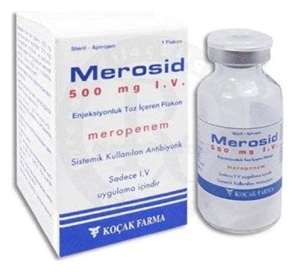

Merosid 500 mg IV Enjektabl Toz İçeren 1 Flakon

Ne için kullanılır
KT · Bölüm 1MEROSİD beyaz ya da açık sarı renkli steril toz halinde flakonda sunulmaktadır. Her kutuda 500 mg meropenem içeren 1 adet flakon bulunmaktadır.
MEROSİD karbapenem antibiyotikl eri isimli ilaç sınıfından meropenem maddesini içeren bir ilaçtır. Bu ilaç vücudunuzda ciddi (ağ ır) enfeksiyonlara (bakterilerin yol açtığı hastalık) sebep olabilecek birçok bakteriyi (mikrobu) öldürebilir.
MEROSİD aşağıda sıralanan enfeksiyonların tedavisinde kullanılır: • Akci ğeri etkileyen enfeksiyon (pnömoni) • Kistik fibrozisi (kalıtsal, ailevi geçiş gösteren bir hastalık) olan hastalardaki akciğer ve solunum yolu (bronşiyal) enfeksiyonları • Komplike (karmaşık) idrar yolu enfeksiyonları • Komplike (karmaşık) kar ın enfeksiyonları • Doğum esnasında veya sonrasında yakalanabilinen enfeksiyonlar • Komplike (karmaşık) deri ve yumuşak doku enfeksiyonları • Beyinde aniden (akut) oluşan, bakterilerin sebep olduğu enfeksiyon (menenjit)
MEROSİD ateş i olan, buna bakterilerin yol açtığı bir enfeksiyonun sebep olduğu düşünülen, nötropenik (kanda akyuvar sayısını n anormal derecede az olması hali) hastaların tedavisinde de kullanılabilir.
MEROSİD yukar ıda belirtilen enfeksiyon tipleri ile birlikte oluşan kanda görülen bakteri kökenli enfeksiyonların tedavisinde de kullanılabilir.